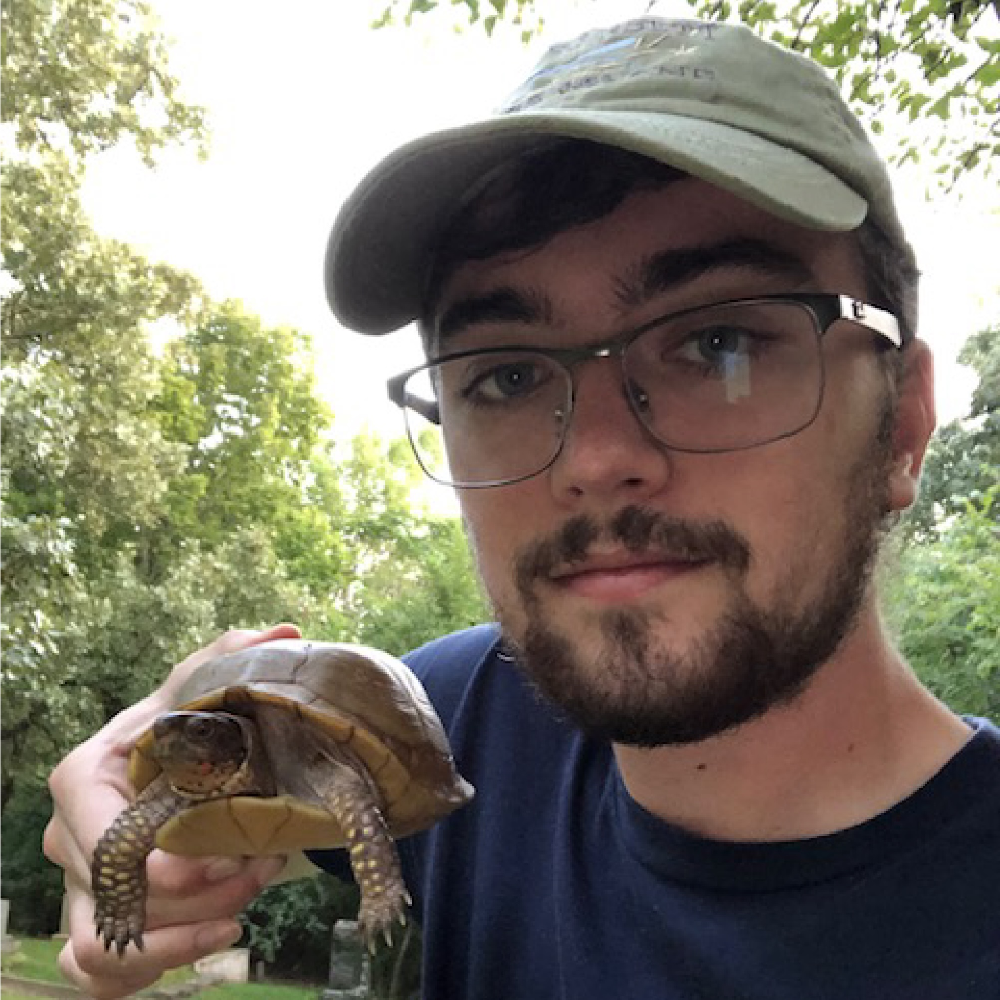
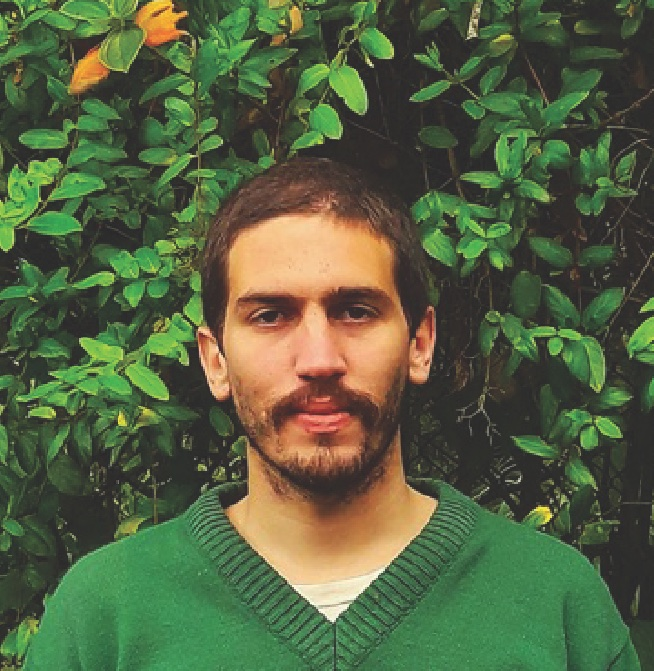

The lab

Thais Vasconcelos, PhD
(Principal Investigator)
The foundation of my research is to seek generalities, or “rules”, in
flowering plant evolution, by focusing on the major biogeographical
patterns observed in their phenotypes. (my first name is pronounced
“tah-EES”)
CV
here tvasc@umich.edu | Thais’ GitHub | Thais’
bluesky | Thais’
Google scholar
Lena Heinrich
(PhD student)
Lena is broadly interested in plant-pollinator interactions, evolution,
and behavioral ecology. Her work aims to explore the ecological and
evolutionary drivers of functional and life history trait variation in
bees and investigate how these traits mediate interactions between bees
and plants across different environments. lenarh@umich.edu
Paulo Henrique Gaem, MSc
(PhD student)
Paulo is interested in systematics and evolution of highly diverse
tropical plant lineages. His work aims to investigate the relationship
between traits and the environment, phylogenetic relationships,
biogeography, and trait divergence between sister taxa in neotropical
myrtles (Myrtaceae, Myrteae), a hyper-diverse and morphologically
homogeneous lineage. phgaem@umich.edu | Paulo’s
Research Gate | Paulo’s
Google scholar

Eric Hagen, PhD
(Postdoctoral Fellow)
Eric’s research interests revolve around questions at large scales in
biology: big phylogenies, macroevolution over millions of years, global
biogeography, etc. He approaches these problems mainly with analyses of
trait evolution and diversification in plants, using statistical tools
like phylogenetic comparative methods and meta-analysis. Much of his
work has focused on plant evolution in response to shifts in ploidy and
climate. erhagen@umich.edu | Eric’s website | Eric’s
Google scholar


co-advised grad students | collaborations

Yacov Kilsztajn
(MSc student, UFRN-Brazil)
Yacov is doing his master’s under supervision of Dr. Vanessa
Staggemeier. He is working with trait evolution and biome shifts in
Myrteae (Myrtaceae). Specifically, he is measuring which of two
processes – pre-adaptation followed by biome shift, or biome shift
followed by adaptation – are prevalent in the group. ykilmail@gmail.com

Patrícia Sperotto, MSc
(PhD student, UFRGS-Brazil)
Patrícia earned her MSc. from the UEFS (Brazil) working with systematics
and macroevolution of neotropical climbing plants, especially focusing
on the role of climbing mechanisms in their diversification. Currently,
she is a PhD student at UFRGS (Brazil) under the supervision of
Dr. Marcelo Reginato and her project involves exploring the influence of
cytogenetic characteristics and morphological traits in the
macroevolutionary dynamics, geographic distribution and niche occupation
of Melastomataceae. patriciassperotto@gmail.com | Patricia’s twitter | Patricia’s
ResearchGate